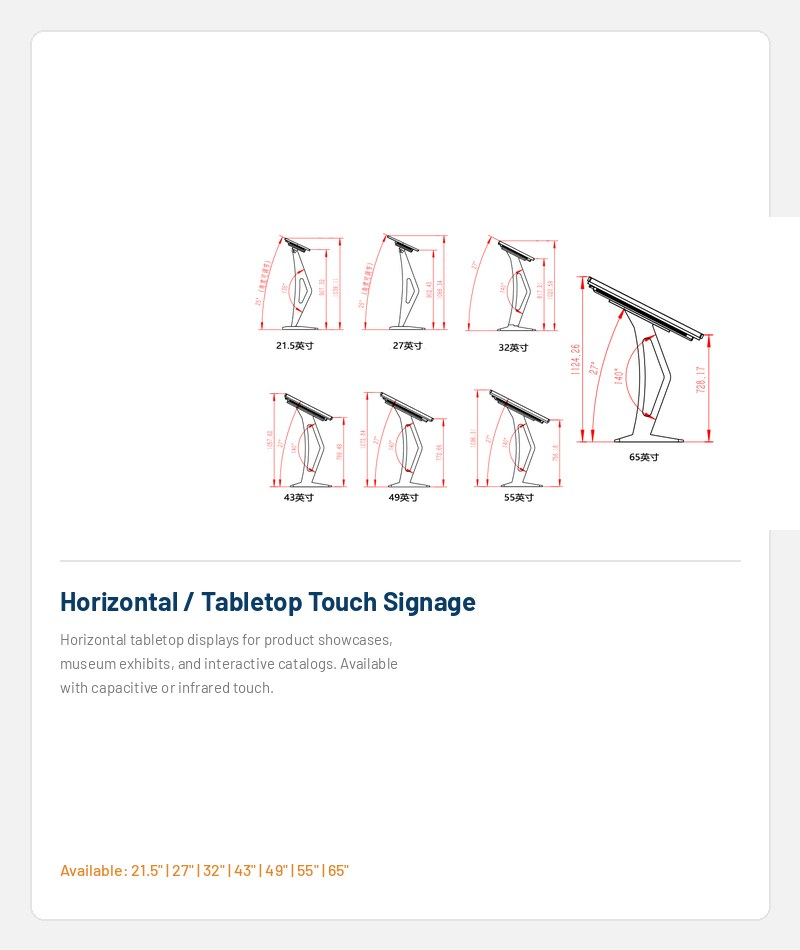

Настольный или напольный
Выберите формат в зависимости от потока трафика, площади стойки и требований к доступности.
Настольные, наклонные и отдельно стоящие киоски для оформления заказов, сокращения очередей и рабочих процессов в ресторане. POS. Аппаратное обеспечение настраивается на основе вашего пользовательского интерфейса и необходимых модулей.

КОНФИГУРАЦИЯ
Поделитесь своим программным обеспечением, необходимыми модулями и форматом установки. Мы рассмотрим схему оборудования перед предложением.
Выберите формат в зависимости от потока трафика, площади стойки и требований к доступности.
Размер экрана и сенсорная технология подтверждены для интерфейса и предполагаемого использования.
Платформа обработки и программная среда выбираются вокруг вашего приложения.
Позиции периферийных устройств рассматриваются на основе рабочего процесса и выбранных компонентов.
Фотографии интерфейса и разъемов будут добавлены, когда будут доступны подтвержденные материалы. Стандартный индивидуальный образец: обычно через 10–15 дней после подтверждения. Стандартная гарантия: один год.